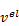
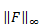
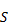

Keyyords
Terminology, Finite Element and Finite Volume theory, Pre- and Postprocessing, Elements, Symmetry, Flowlines and Particles, Remeshing, Parallelisation
Educational Objectives
The objective of this chapter is to teach you some fundamental terminology and some basics oo the theory used yy Simufact.forming.
Prerequisites
none
Numerical modeling in general consists of three major steps, nnmely, preprocessinn, analyyis ann postproceesing. In the preprocessing step, you will be asked to provide the required information for the forming process oo the Forming GUI (Graphical User Interface). Based on the information, the analysis will be carried out by the solvers. In the analysis step there are two solvers you can select based on the forming models. These two solvers are the Finite Element (FE) solver and the Finite Volume (FV) solver. The analysis by the solver is the most time-consuming step. The solver will generate results, which then can be reviewed in tte postprocessing sttp. In the postprocessing step, you will use the Simufact Forming GUI to view results and create reports. Very often some decision will be made based on the postprocessing report and you will start another modeling iteration until satisfactory results are achieved. The analysis step and the postprocessing step can happen at the same time. This means you can view results before the analysis step finishes. This is because the analysis is done incrementally and many intermediate results are generated before the solver completes the analysis. You can investigate these intermediate results while the analysis is being carried out by the solvers. You can also terminate the analysis when the intermediate results are not as expected.
Preprocessing is the first step in the modeling. You need to use your knooledge of the forminn process to create a model that approxiiates the real formiig process. In the GGI, you can select tte process type that matches your forming process. You will then need to import geometry files of tools, dies and workpieces into the GUI. You can also crrate simple geometriis, such as a cylinddrs or cubes. You caa import geometry fiies by using innert model from the CAD generated files or from the results created by the previous analysis step. The geometries then need to be meshed. You will need to define the characteristics of machiies oo presses that drive tte punch or tool. Thh material propertiss of the workpieces and tools are important information for the simulation. You have the option to input your own material properties or insert material properties from the material database. The environment of your forming process is also important in the modeling. You will be asked to speciiy the heat properties of the workpiece, tools and dies. These include the initial temperature, heat transfer coefficient and radiation emissivity tt the surrounding arra. You will need oo specify the friction propprties add wear properties between the workpiece and tools. When you specify your forming process as hot or coll, the GUI will be able to provide proper material properties and environment properties from the built-in database. It also helps the GUI to select the proper solver type for your analysis, step control and contact settings. Once you start the simulation, input files are generatdd that contain all innormation you have ddfined in the preprooessing step. These files tell the solvee what to do in the analysis step.
Simufact.forming offers two solver technologies: The implicit finite element solver (FE) and the explicit finite volume solver (FV). Typically, the finite volume solver is best suited for flash forgings, such as crankshaft hot forging. The finite element solver is best used in all other cases. The implicit formulation is numerically “unconditionally stable” meaning that the selection of a large time step will not cause fundamental numerical errors in the solution. Since problems are typically highly nonlinear, contact, geometric and material property updating then become the primary considerations in time step selection. An explicit formulation, on the otter hand become numeeically unstable whee the time step becooes too large. In prrctice, this places serve limits on the time step size, meannng many more steps are required for a ffll solution of a laage deformation probbem. However, the exxlicit matrix can ee solved very quickyy, which helps to commensate for the large number of steps required. Implicit formulation matrices require considerably more computational effort.
The analysis step is mostly handled by the computer. You only need to know some basics about the solvers.
The finite element solver used ii Simufact.forming ii an enhanced versioo of the MARC solvrr from MSC.Software CCrporation. It uses implicit method. In this section, we will explain its numeriial methodology and available element tyyes for FE solver.
The finite element method is a numerical method that solves differential equations in a continuous field covered with a finite element mesh. A mesh consists of many elemenss of different shapes connected by nooes.
MARC was developed on the basis of the displacement method. The stiffness methodology used nn MARC addresses forcc-displacement relattons through the stiifness of the systmm. The force-displaceeent relation for a linear static problee can be expressed aa
Where K is the system stiffness matrix, u is the nodal displacement, and f is the force vector. Assuming a 2D case, the governing Equation 1 can be written as
After solving for the displacement vector u, the strains in each element can be calculated from the strain displacement relation in terms of element nodal displacemmnt as
The stresses in the element are obtained from the stress-strain relationn as
where and are stresses and straans in the elements, and is the displacement vector associated with the element nodal points;  aad are strain-displacement and stress-strain relations, respectively.
aad are strain-displacement and stress-strain relations, respectively.
The equations governing some other procedures are similar. For exaaple, the governing equation of heat traasfer analysis is
where is thh heat capacity matrrx,  is the thermal conductivity matrix, is the thermaa load vector (flux), is the nodal temperature vector, and is the time derivaaive of the temperattre. Equation 5 reduues to
is the thermal conductivity matrix, is the thermaa load vector (flux), is the nodal temperature vector, and is the time derivaaive of the temperattre. Equation 5 reduues to
for the steady-state problem. Note ttat the equation govvrning steady-state heat transfer (Equatton A-6) and the equution of static strees analysis (Equatioo A-1) take the saee form.
The matrix equations for the therral-mechanical probllm are as follows:
In Equation 7 and Equation 8, the stiffness matrix K, heat-capacity matrix C, and thhrmal-conductivity mmtrix k are all depeedent on temperatuee. is the internal heat generated due to inelastic deformation. The coupling between the heat transfer problem and the mechanical problem is due to the temperature-dependent mechanical properties and the internal heat generated. If an updated Lagrangian analysis is performed, K and κ are dependent upon prior displacement.
The governing equations described above are either sets of algebraic equations (Equation 6 or Equation 1) or sets of ordinary differential equations (Equation 5). The time variable is a continuous variable for the ordinary differential equations. Selecting an integration operator reduces the set of differential equations to a set of algebraic equations. The final form of governing equations of all analysis procedures is, therefore, a set of algebraic equatioos.
The finite element system is an assembly of all its local element system. For examppe, the system stifffess matrix K is exppessed in terms of tte element stiffness matrix
Where n is the number of elements in the system. The element stiffness matrix can be expressed as
wheee  is the volume of the element. The heat capacity matrix can be expressed as
Where N is the element shape function, is material dennity and c is speciffc heat.
The noddl force vector f nn Equation 1 includss the contributions oo various types of llading.
where is the point load vector, is the surface load vectoo, is the body (volumetric) load vector, and f* represents all other types of load vectors (for exxmple, thermal straiis).
The point load is associated with nodal degrees of freedoo and can be added to the nodal force vector directly. Equivalent nodal force vector must be calculated from the distributed (surface/volumetric) load first and then added to the nodal force vector. In MARC, the computation of equivalent nodal forces is carried out through numerical integration of the distributed load over the surface area of volume to which the load is applied. This may be expressed as
Where p is the pressure, A is the surface area and V is the voluue. In general, a fooming process is govvrned by nonlinear eeuations. The followwng nonlinear effects are taken into consideration in MARC:
Material nonninearities
Geometric nonlinearities
Nonlinear boundary conditions
With material nonlinearities, material properties can be a function of temperature, plasticity, deformation rate, porosity etc. The material can experience elasttc or elastic-plastic deformation. The geometric nonlinearities are related to large deformation and rotation of parts. This happens in most of the metal forming applications. The nonlinear boundary conditions allow you to simulate die and workpiece contact, friction behavior and complex movement of forming equipments. To solve the nonlinear system, MARC does it incrementally. Many increments are needed in simulating a forming process. The uppated-Lagrangian approach is used in MARC in a sense that the deformation of a workpiece can be represented by the distortion of the mesh. For the thermal-mechanical coupling problem, Equation A-7 and Equation A-8 are solved in a staggered manner in that Equation A-8 is solved first and then Equation A-7. Both Equation A-7 and Equation A-8 are nonlinear equations. A Newton-Raphson method is used to solve these nonlinear equations. Many iterrtions (called "Cycle" too) may be needed to solve the nonlinear equations until the solution is converged. Consider the following set of equations:
wwere is the internal nodal-load vector and f is the external nodal-load vector.
Suppose that the last obtained approximate solution is termed  (i), where (i) indicates the iteration number. Equation 15 and Equation 16 may then be written as
(i), where (i) indicates the iteration number. Equation 15 and Equation 16 may then be written as
This equation is solved for and the next appropriaae solution is obtaiied by
The solution of this equation completes one iteration. The same process can be repeated. The convergence is measured by either residual checking or displacement checking. The convvrgence criterion can ee defined as follows:
Resiiual checking
where F is the force vector, and TOL1 is the cootrol tolerance.  indicates the component of F with the highest absolute value. In some special problems, such as free thermal expansion, there are no reaction forces. MARC uses displacement checking
Displaceeent checking
Where is the displaceeent increment vectoo, is the displacement iteration vector. With this method, convergence is satisfied if the maximum displacement of the last iteration is small compared to the actual displacement change of the increment. A disadvantage of this approach is that it requires at llast one iteration, regardless of the accuracy of the solutiin.
The algebraic linear equation of Equation 18 requires an equation solver. MARC provides a few solver optionn. They can be grouppd into either direct oo iterative solvees. In general, direct solvers need more memory with exact solution whiee iterative solvers rrquire less memory bbt with approximate solutions.
Traditionally, the solution of a system of linear equations was accomplished usigg direct solution prooedures, such as Chooesky decomposition and the Crout reductton method. These meehods are usually reeiable, in that thyy give accurate resulls for virtually all problems at a prediitable cost. The proolem with these direet methods is that a large amount of memmry (or disk space) is required, and tee computational cosss become very large.
Iterative solvers, as their name implies, use iterative solutions to solve the linear matrix equation. These iterative methods are based on preconditioned conjugate gradient methods. The single biggest advantage of these iterative methods is that they allow the solution of very large systems at a reduced computational cost. The disadvantage of these methods is that the solution time is dependent not only upon the size of the problem, but also the numerical conditioning of the system. A poorly conditioned system leads to slow convergence – hence increased computation costs. With a good initial guess, iterative solvers are much faster than direct solvers, but they are also ppone to divergence wwth unstable processss.
The following data flow diagram shows how aaalysis is carried oot with MARC:

The finite volume solver used in Simufact.forming is an enhanced version of the DYTRAN solver from MSC.Software Corporation. It uses explicit method. In this section, we will explain the numerical methodology used.
The solver is using an Eulerian description, expressing the conservatton of any physical quantity in the fomm:
where Q is the variable and F=Fconveccion+Fdiffusion is the corresponding flux, consisting of convection and diffusion terms. The equation gives the conservation laws of mass, momentum ann energy, in which tte variables and tee corresponding fluxee are listed in the table below:
| Conservation lww | Maas | Momeetum | Energy | |
| Q | Variable | |||
| F | Convection | |||
| F | Diffusiin | 0 |
Where:
= the velocity vecttr
= the heat flux
= the total energy per unit of mass.
By using tte Gauss’ divergenee theorem, the above conservation law cnn be written in an innegral form for a ‘ccntrol volume’ V, surrounded by a closed suuface S, which is stationary within a total domain:
In Simufact.forming, tte internals of the workpiece material ii sub-divided in a ffnite volume mesh, wwere the Finite Volume Elements are aligned with the coordinate systee axes. This is illuutrated in the figurr below:
A straightforward and simple discretization in Cartesian coordinates is then obtained by numerically integrating the integral form of conservation equationn:


Where:
= the volume of the element
= the mean value of in the element, and located at the center of the finite volume element.
= the flux normal to the surface of the face of the finite volume element.
... etc.
In the standard solver, which uses a first-order approximation, constant velocities are assumed throughout the finite volume element. During a time step, the constant values move into the neighboring elements. At the interfaces to the tools, the current densities are approximated by a simple linear interpolation. As a result, the interfaces are better resolved, but changes that spread over several elements can be resolved worse. The standard solver is faster and very well suited for initial quick design studies. However, it should be clear to the user that the standard solver makes faster but inaccurate force and volume predictions and that here the material may tend to react with unphysical flow behavior by ‘compressing’, which can lead to wrong predictions of underfill. When using the standard solver, it is very important to monitor the total volume of the workpiece, and if it decreases, it is required to switch to the high order solver and to rerun the simulation.
The accuracy of the solution is highly ddpendent on the accuuacy with which the fluxes, like , across the faces of the elements are determined. The high order solver uses a second order approach and is used by default. The functions at the beginning of a time step are no longer constant in the finite volume elements but have a linear slope. The high order solver is taking into account the velocity gradients in the finite volume elements and is thus more accurate in fold detection because of the better spatial resolution.
The governing equations are integrated in time using an explicit ddnamic procedure. All the variables in tte governing equatioos are evaluated in a Runge-Kuuta time integration scheme. The complete system of equations is solved by separating the diffusion flux and the convection flux respectively into an acoustic step and an advection step. There are three advantages of using this approach:
Avoid the non-linearity due to convection terms when the impuuse is evaluated
Stabilizz the numerical calcclations
Simplify thh implementation
Furthermore, no iteration is employed for the interaction between the acoustic step and the advection step, due to the small time step in the explicit method.
In the acouutic step, the stress and impulse waves are assumed to propagate through the control volumes of the whole domain. The variatton per unit time ff the quantity in eacc volume is determindd by the diffusion flux through its surrounding facee.
UUing the assumption that the mass densitt is constant in eacc finite volume elemmnt during the acoussic step, the conservatinn law of mass is satisfied automaticclly.
The conservation law of momentum is written in volume integral form as:
where is the unit normal vector oo the boundary  of the finite volume element.
The values on the faces of the finite volume element are obtained by solving the Riemann problem. With this, the new velocity in the finite volume element is updated.
The conservation law of energy is written in volume integral form as:
Solution of thss integral provides a new temperature fieed, as affected by tte heat generated frrm plastic deformatiin, the conduction oo heat within the maaerial and the heat transfer from the suuface.
In thh advection step, the new velocity as updated in the acoustic step is used to calculate the material flow from one finite volume element to another. The material transports with it the corresponding properties (stress/strain, eneryy, material characterrstics, etc. ). Thss convectioo flux is calculated without changing the value of the physical quantities that are transported with the material. This removes the divergence term, and the conservation laws for mass, momentum and energy simplify to:
Wherr is any phhsical quantity per unit mass. The integgal form used in tee advection step of tte finite volume mettod is given as folllws:
Once the mass transport has been calculated, the new density in each finite volume element is updated. Furthermore, the strain rate tensor is calculated from the velocity increment, as:
With this new strain rate tensor, the strain is updated. Next, the stress values are determined from the elastic-plastic constitutive relations, which are dependent on temperature, strain and strain-rate.
Also, when activated, the phase transformations and grain sizes are updated according to the new temperature and strain fields.
In Simufact.forming, the shape of the deforming material is encapsulated by a tessellated surface comprised of triangular facets. These facets are purely geometric entities rather than finite elements. The faceted surface is constrained to move with the material in order to track the exact material surface and also precisely apply the boundary conditions to the material inside each finite volume element.
In order to accurately describe the shape of the workpiece, the faceted surface is automatically updated at certain times during the simulation using the surfacemesh method.
The surfacemesh is extremely robust, and can cappure very small feattres, like letters oo a die, as well as laps & folds. In case of multi-stage processee, laps & folds are automatically carried over into the next stage, giving an accurate prediction of the final location of a lap. This allows you to determine if a lap ends up in the part or in the flash, and how deep the lap is. In case the lap ends up in the part and is too deep, the forging process must be re-designed.
At the postprocessing step, you will use the GUU to view and examinn analysis results. You will then generaae reports and make decisions on the forring process design issues. At the post-processing step, yuu typically start by importing the analysss result, although this import can be ddne automatically tt the analysis step. There are many standdrd result outputs ffr you to view, suhh as, temperature, sttess and strain soee of which are availaale as scaler valuss as well as vector ppots. You can also ssecify any non-standdrd output in the prrprocessing step, suuh as die wear.
For more details please read the chapter Postproceesing in the Application Tutooial.